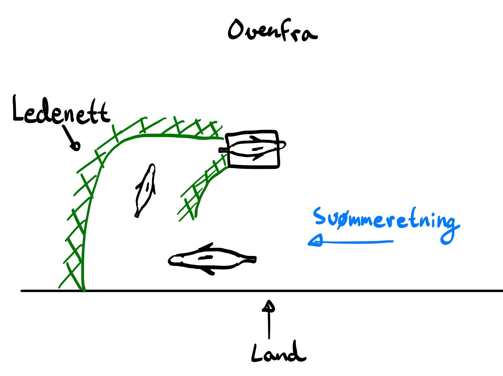
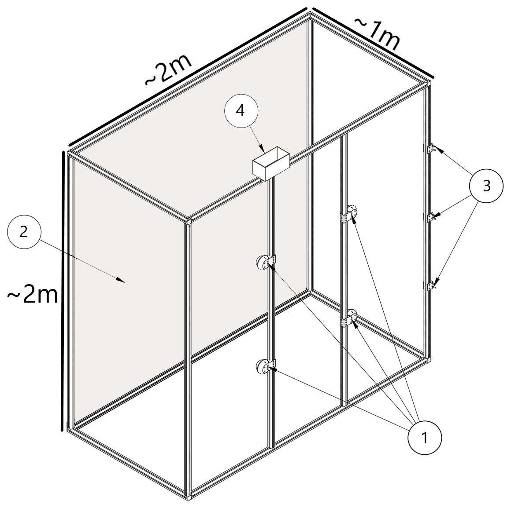
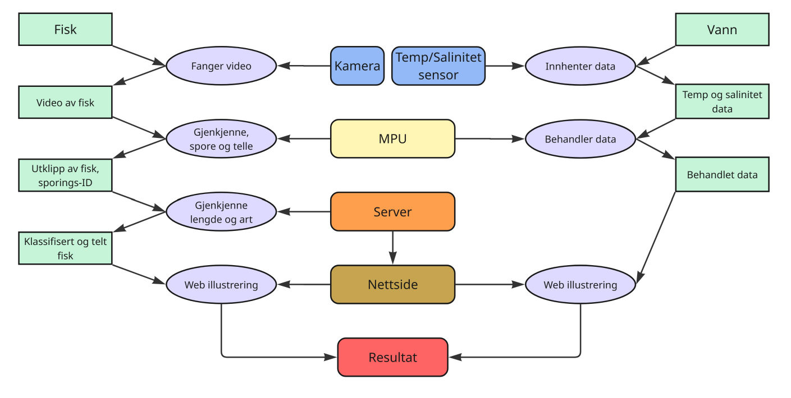
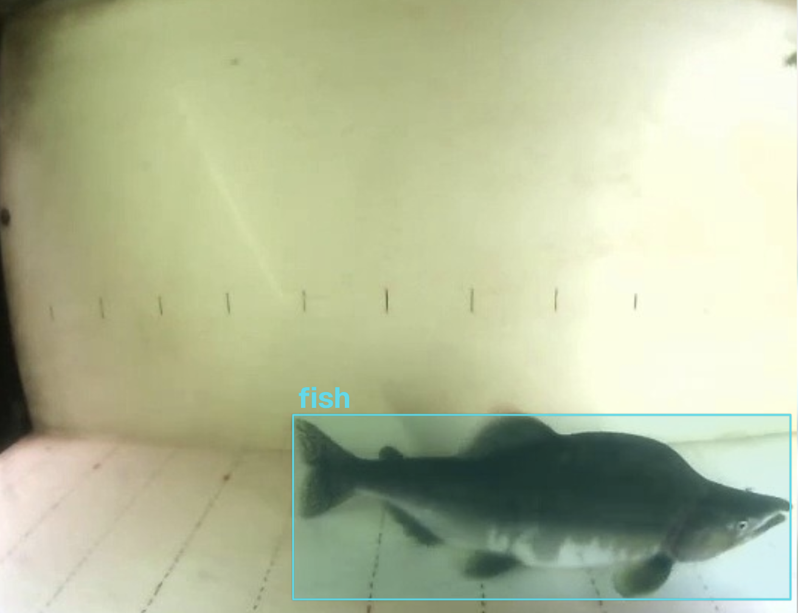
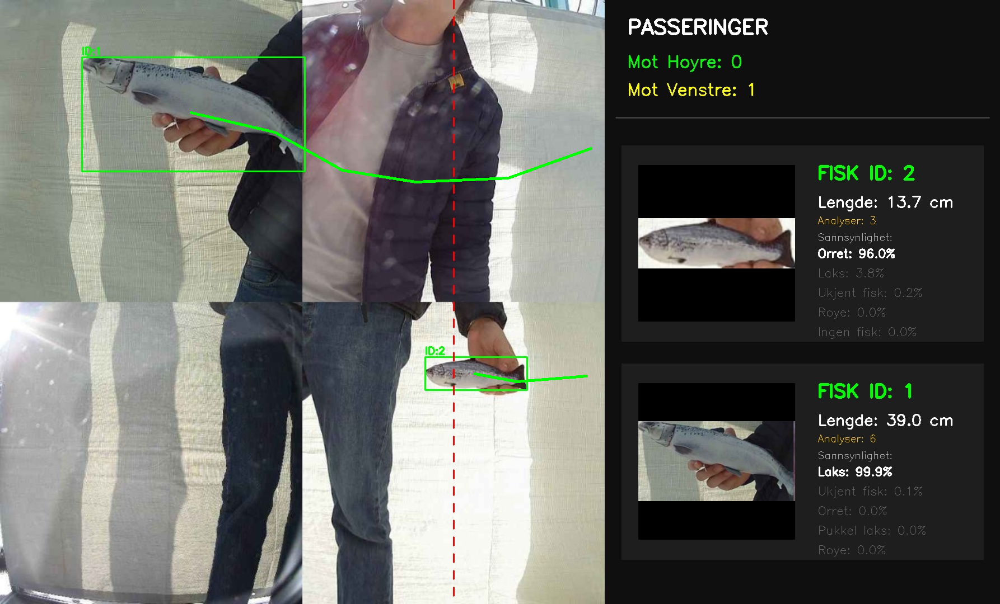

A vision transformer that knows its salmon
The ML half of a five-person NTNU project on monitoring invasive pink salmon (pukkellaks) in Norwegian fjord straits. Underwater cameras watch fish pass through a 1×2-metre observation chamber; a small CNN detects them locally on a Raspberry Pi; a DINOv2 vision transformer, fine-tuned with LoRA, classifies species and estimates length on the server. I shared hardware responsibility for the camera rig and built the server-side classifier.
Why pink salmon
Norwegian wild salmon (laks) is classified as near threatened on the national red list. The fastest-growing threat is pink salmon, an invasive Pacific species that spawns earlier and more aggressively, displaces wild salmon and sea trout from their best spawning grounds, and then dies en masse (the species has a fixed two-year life cycle), polluting the watercourse with rotting fish. In 2025 control efforts ran in 63 Norwegian rivers.
Existing fish-monitoring tech is mostly designed for inside salmon farms or for river-mouth traps. Nobody is watching what comes into the fjords before the fish move upstream. That is the gap our project tries to address.

The system, briefly
- Observation chamber. 2040×2040×1000 mm aluminium-profile frame with a white tarp back wall, mounted in-stream.
- Cameras. 1× 8MP IMX179 (detail capture; lice identification) and 3× 2MP IMX290 low-light cameras (0.001 lux). Each in a sealed acrylic-dome housing with the lens at the dome's geometric centre to minimise refraction.
- Sensors. Three ESP32 nodes at depths 0.5/1.0/1.5 m, each with a DS18B20 temperature sensor and a Keyestudio TDS probe (a cost-effective proxy for salinity). I²C bus to a Raspberry Pi 4B.
- Edge compute. Raspberry Pi 4B handles four parallel USB-3 video streams, runs the local detection model, and uplinks over 4G.


The two-stage ML pipeline
The interesting design choice was splitting detection from classification:
- Local CNN (YOLO) on the Pi. A small detector watches the video stream in real time, produces bounding boxes and a tracking ID per fish. Most of the time, all it sees is water. When it triggers, only the relevant frames get sent over 4G, which saves bandwidth and storage and keeps the pipeline alive when the cellular link drops.
- Server-side ViT (DINOv2). A much heavier transformer runs on the server, where compute is cheap and the model can afford to be careful. It classifies species (salmon / pink salmon / sea trout / sea char / "no fish") and estimates length, jointly, in a multi-task head.
The "no fish" class is what filters false positives (branches, waves, shadows) that the small local model lets through. Tracking IDs let the server pool multiple frames of the same fish during its passage and vote, which makes the final classification far more robust than any single frame.


The LoRA part
DINOv2 is a strong general-purpose ViT, but it has not seen pink salmon in low light through an acrylic dome. Full fine-tuning would update hundreds of millions of parameters; that is expensive and overkill for our dataset size.
LoRA (Low-Rank Adaptation) assumes the changes you actually need to make
during adaptation have low intrinsic rank. For each frozen weight matrix
W ∈ ℝd×k, you inject a trainable low-rank update
ΔW = B·A where A ∈ ℝr×k and
B ∈ ℝd×r with r ≪ min(d, k). The original
weights stay put; only the adapters are trained.
In practice this gave us a model that handled our domain well, trained in hours instead of days, and didn't need a massive amount of labelled data to land somewhere useful.
My slice of the project
Five-person team. From the report's work-allocation section, my share was:
- Hardware (shared): physical camera-system layout, component interconnection, power distribution.
- Species classifier: adapting and validating DINOv2 with LoRA for the species task, and integrating the classifier with the video pipeline.
Teammates owned sensors, detection & length estimation, frontend, and backend respectively. Everyone wrote.
Writeup
Full Norwegian report: system design, hardware bill of materials, ML method, validation, all of it.